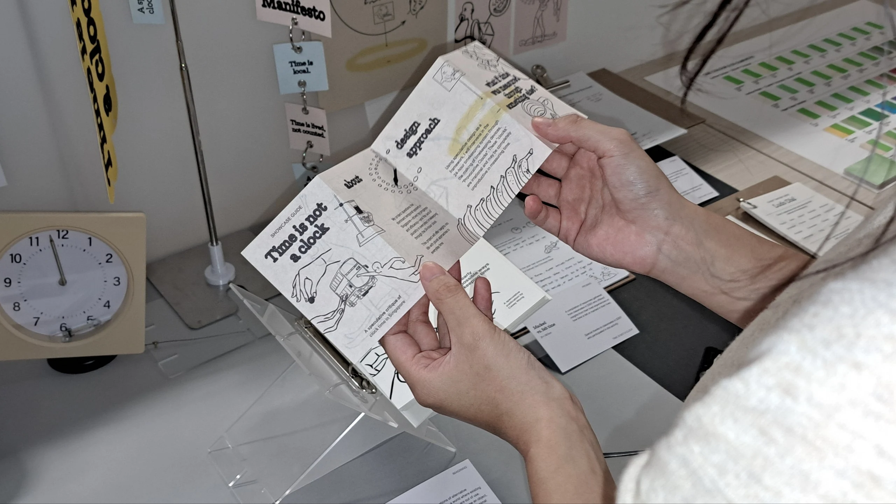

The one where I almost lost my mind, submission hours

Close-up of my showcase
A summary of all that went down
I managed to finish everything this week! My publication, prints (captions) for showcase, focus group worksheets and everything else. One picture says a thousand words, so here is a slideshow of images.
Cutting my publication
Reflection of the week
Sorry for the choppy writing: This has been a very eventful week. I can't believe I managed to finish everything at all. To round off for the entire semester, I think I have been through an entire lifetime in these few weeks. When I thought of tackling this topic last year, I did not anticipate taking on a speculative, science-fictiony approach, but here we are. Even though it was so so busy and so stressful, I really enjoyed the rigour and preparing and designing for the entire project. Even though it was really painful to do the research, I liked reading the papers and learning more about time. I don't think I'll ever see time the same way. I think what I learnt that was the most important is about how little time we have. It seems like yesterday that we just embarked on our FYP, and here we are scrambling to finish Sem 1's deliverables. Moving forward, I need to stop hyperfixating on things and just do it. Don't over think, just do it! Special thanks to my friends from d301 and Shu Min, who guided me throughout the semester and part of last year as well!! THANK YOU!!!